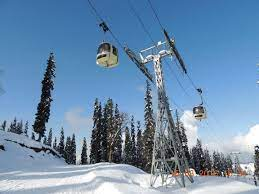
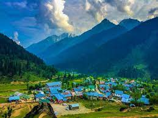
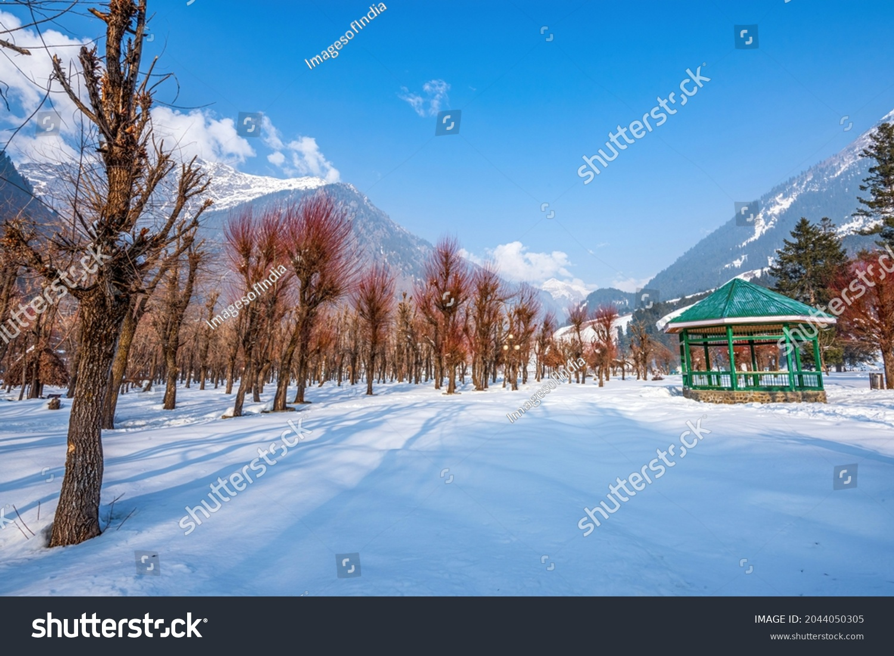

Most popular attractionsin Kashmir
1. Dal Lake
Dal Lake has rightfully become an icon of the Kashmir tourism industry. A Himalayan urban lake, it has five basins and a number of channels that are well linked with each other. There are plenty of fishes in Dal Lake and fishery is the second largest industry of the region centered on the lake.

2. Gulmarg Gondola
Asia's largest and highest and world’s second-largest and second highest cable car project, Gulmarg Gondola is the top attraction in Gulmarg. In fact, a Gulmarg tour without a ride on the popular cable car is considered incomplete. This must-do activity in Gulmarg is perfect for family vacationers, romantic couples as well as adventurers seeking to get to the top the mountain for the best skiing experience (in winter). The scenic views of mountains and valley during the cable car ride are also unforgettable and unmatched. The gondola can ferry 6 people at a time and 600 people per hour.
3. Aru Valley
Aru Valley is a famous tourist place in Jammu & Kashmir located in the Anantnag district around 12 kilometers from Pahalgam. Tourists are attracted towards it because of its lush meadows, pristine lakes & mountains, and it also serves as a base camp for trekking to the Kolahoi Glacier and Tarsar Lake.
4. Betab Valley
Betaab valley Pahalgam is one of the most beautiful and serene valleys of Jammu and Kashmir. It is located in the Anantnag district of Jammu and Kashmir and is about 7 kilometers from the town of Pahalgam. It was originally known as Hagan Valley and got the name of Betab valley Pahalgam from the popular Bollywood movie Betaab, which was filmed here in early 80’s.
